Fiverr · juanm_hernandez
Gestor de tareas: instructivo de Fiverr
Todo lo que debes pegar en Fiverr para publicar este servicio. Cada texto en inglés tiene un botón para copiarlo; lo que está en español es solo para ti.
- En Fiverr entra a Selling → Gigs → Create a new Gig.
- Copia y pega cada campo en el orden en que aparece aquí.
- Los precios son una propuesta. Si Fiverr pide un mínimo más alto para la categoría, sube el paquete Basic a ese mínimo.
- Si no encuentras la categoría exacta, elige la más parecida: los nombres cambian de vez en cuando.
- Fiverr recibe hasta 3 imágenes: usa las tres primeras. Las «extra» son para cambiar alguna o para tu portafolio.
El servicio
Gestor de tareas para equipos
Una aplicación web para repartir tareas entre un administrador y su equipo. El administrador crea y asigna; cada persona acepta, pide aclaraciones, trabaja y entrega; el administrador revisa, aprueba o devuelve. Incluye historial, informes y manejo de usuarios por invitación.
Qué tan difícil es de entregar: Media. La aplicación ya está hecha: para cada cliente instalas su base de datos, pones su marca y creas su administrador. El paquete Premium incluye cambios a medida (estados o campos nuevos), que sí son trabajo de programación.
Demo en vivo: https://relevo-tareas-demo.vercel.app/?demo=admin
1 · Título
I will build a task management web app for your team with admin and user roles
2 · Categoría
Programming & Tech → Software Development → Web Applications
3 · Etiquetas de búsqueda
4 · Paquetes y precios
Basic
$150
Nombre
Starter
Descripción
Task app with your brand: admin and team roles, full review workflow, history. Up to 10 users.
Standard
$280
Nombre
Business
Descripción
Everything in Starter plus reports with CSV export, your custom domain and up to 30 users.
Premium
$450
Nombre
Premium
Descripción
Everything in Business plus custom statuses or fields, unlimited users and 30 days of support.
5 · Descripción
I will build a task management web app where an admin assigns work to the team and follows it to the end. ADMIN - Create tasks with title, instructions, priority, due date and owner - See every task by status, including overdue ones - Answer clarification requests, review submissions, approve or return with comments - Task history, reports per person and CSV export - Invite, deactivate and manage users TEAM MEMBERS - See only their own tasks, with what is due first - Accept, ask for clarification (with a reason), start and submit with notes WORKFLOW Assigned > Accepted > In progress > Submitted > In review > Completed, or Returned with changes. LIVE DEMO https://relevo-tareas-demo.vercel.app/?demo=admin Switch roles in the top bar. SECURITY - Secure login; users join by invitation and set their own password - Permissions enforced in the database, not only on screen - Every step is checked on the server and logged GOOD TO KNOW - Built with React (Next.js), TypeScript and Supabase - English and Spanish, light and dark mode, works on phones - Runs on your own accounts: the app and the data are yours Message me before ordering to confirm the scope.
6 · Preguntas frecuentes
Cada bloque es una pregunta y su respuesta.
Can a team member see other people's tasks?
No. The database itself only returns each person their own tasks and history. The admin sees everything.
How do users get access?
The admin creates an invitation and sends a one-time link. Each person sets their own password, so the admin never knows it. Access can be deactivated at any time.
Can you change the statuses, fields or workflow?
Yes, in the Premium package or as a custom offer. Tell me what your process looks like and I will confirm what is needed before you order.
Does it send email notifications?
Account emails (confirmation and password reset) are included. Notifications for each task step are not included; I can add them as a custom extra.
Are there monthly costs?
The hosting and database services have free plans that are enough for a small team. Larger teams may need a paid plan, and I tell you what applies before you order.
7 · Preguntas para el comprador
Van en el paso «Requirements». Déjalas como texto libre.
Your company or team name and your logo (if you have one).
How many people will use it, and who will be the admin (name and email)?
Does the workflow in the demo fit your process, or do you need changes?
Which language should the app start in: English or Spanish?
Do you already own a domain? If yes, where did you buy it?
8 · Imágenes
Están en la carpeta fiverr/imagenes, al lado de esta página.
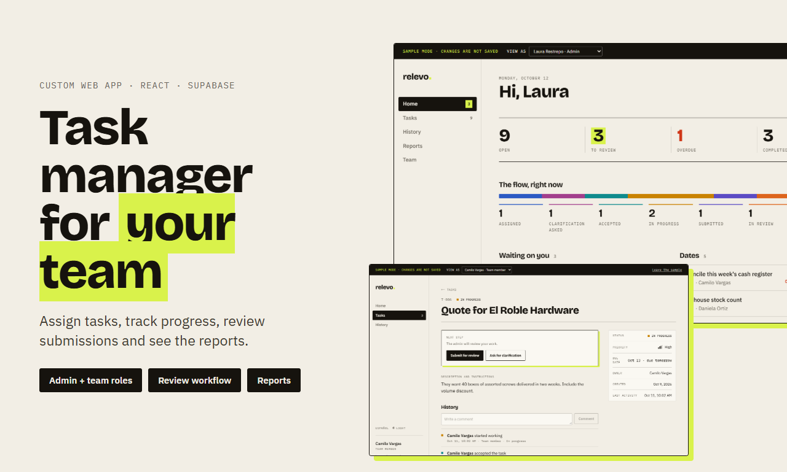
1-portada.png · Portada (súbela primero)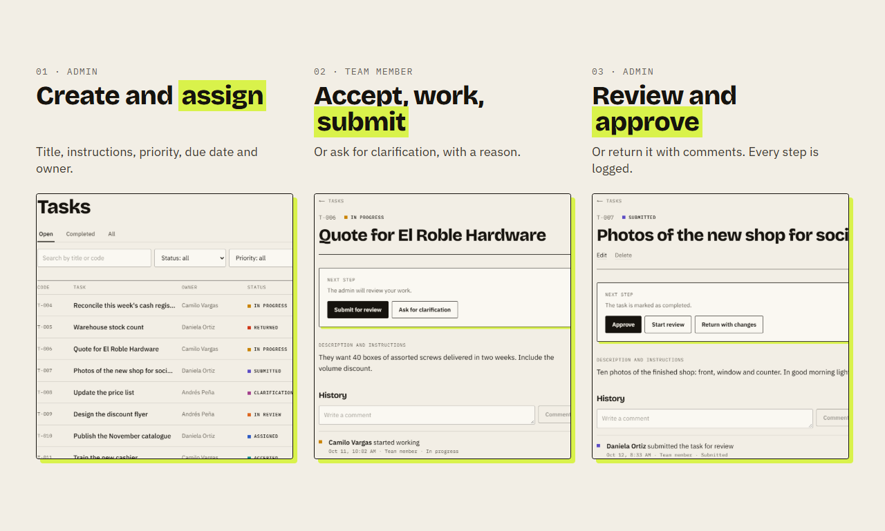
2-como-funciona.png · Cómo funciona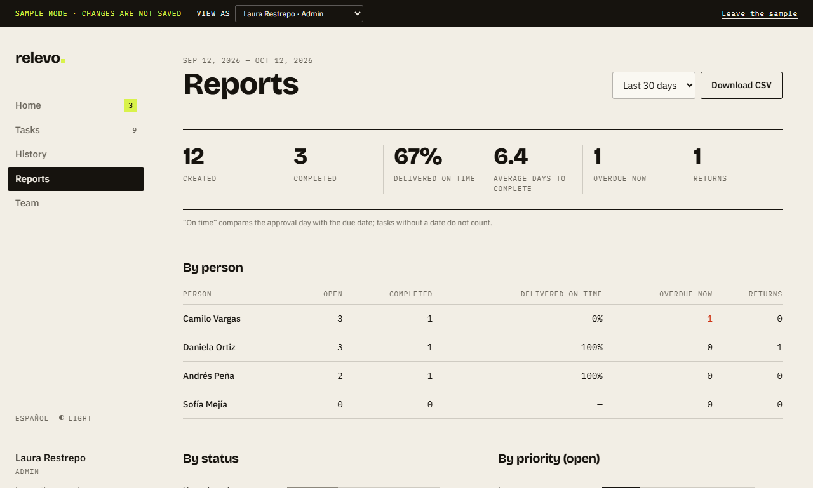
3-informes.png · Informes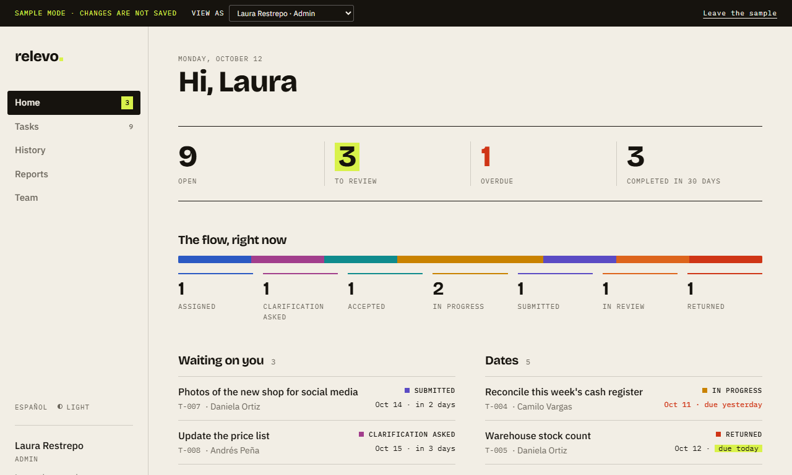
extra-tablero-admin.png · Extra · Tablero del administrador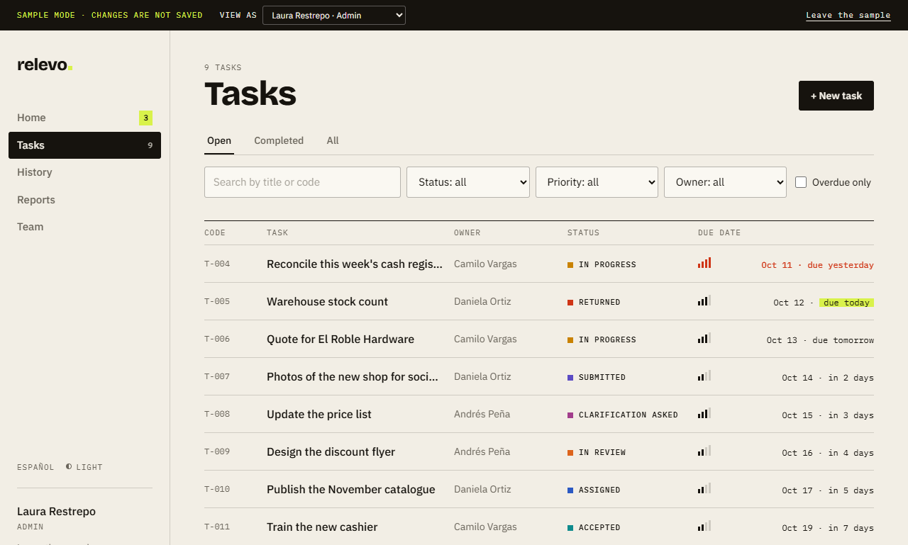
extra-lista-de-tareas.png · Extra · Lista de tareas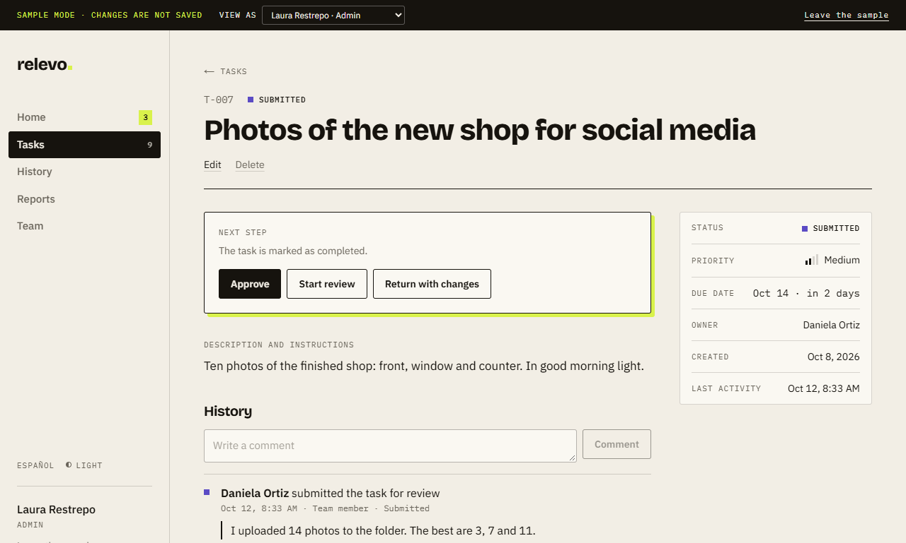
extra-revision.png · Extra · Revisión de una entrega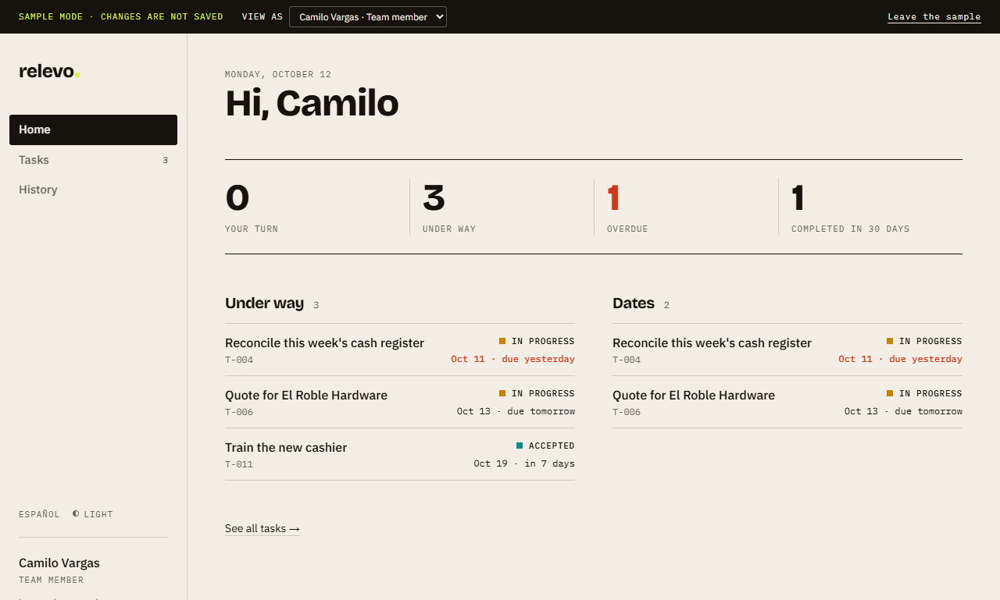
extra-tablero-empleado.png · Extra · Tablero del empleado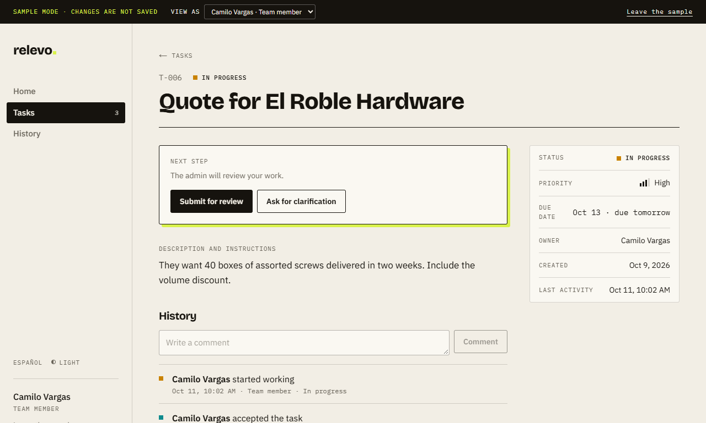
extra-tarea-empleado.png · Extra · Tarea vista por el empleado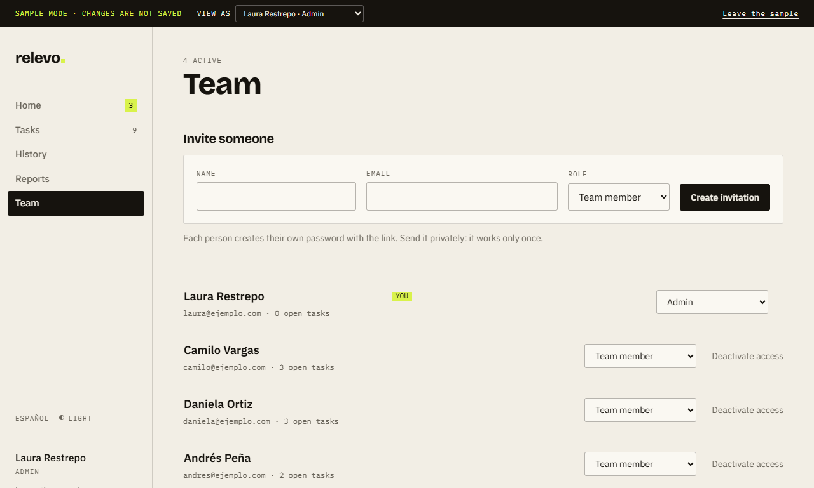
extra-equipo.png · Extra · Equipo e invitaciones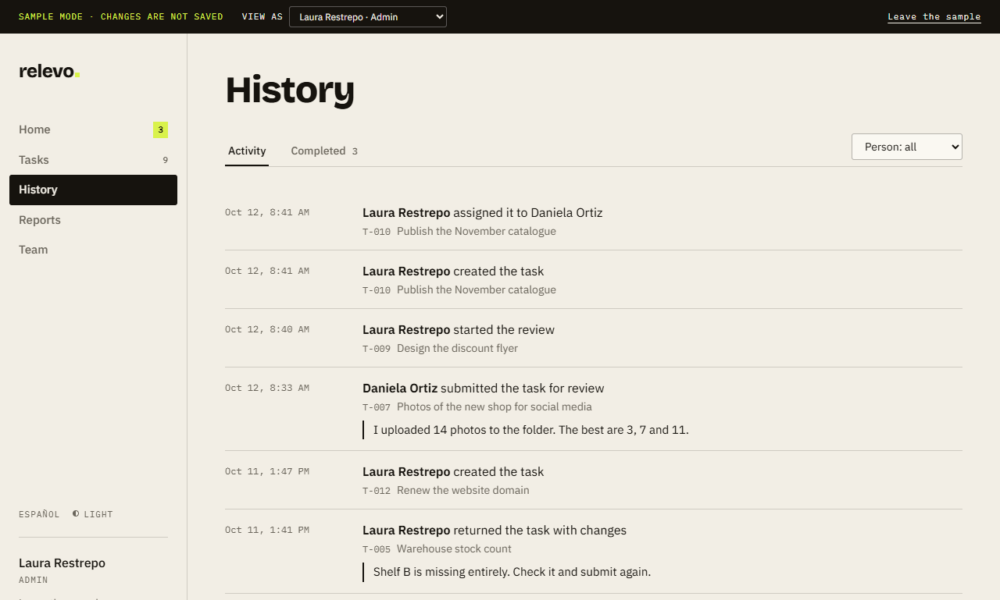
extra-historial.png · Extra · Historial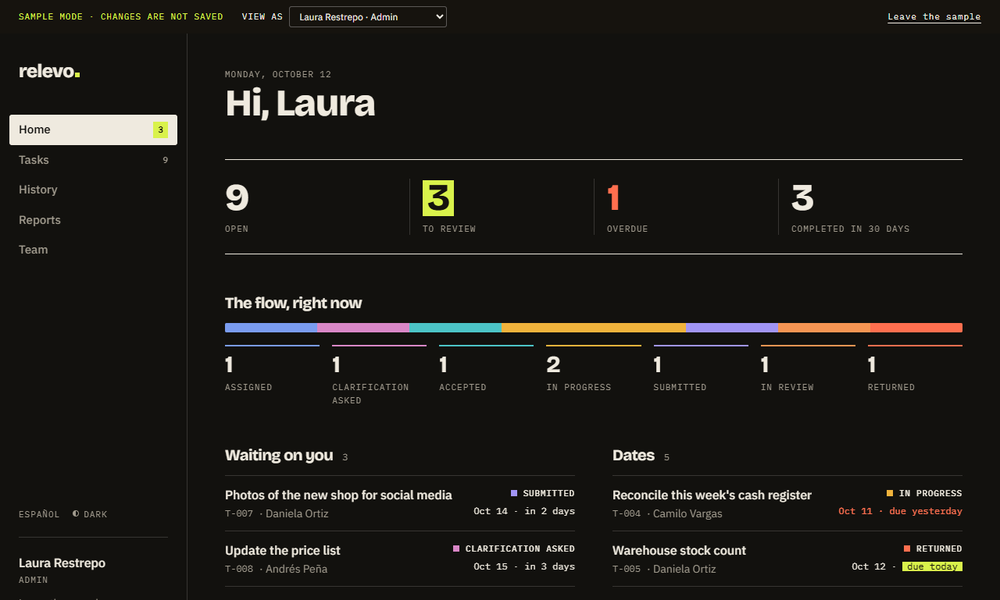
extra-modo-oscuro.png · Extra · Modo oscuro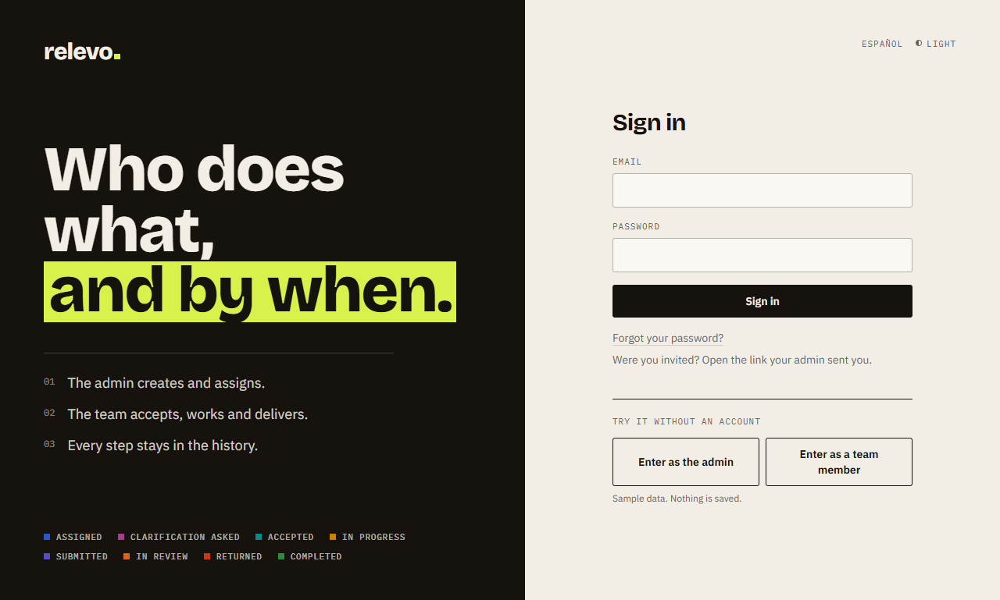
extra-entrada.png · Extra · Página de entrada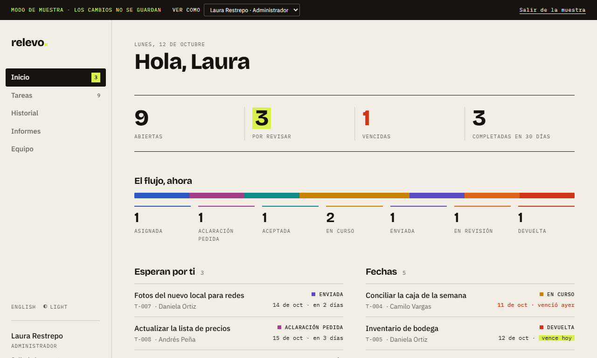
extra-espanol-tablero.png · Extra · En español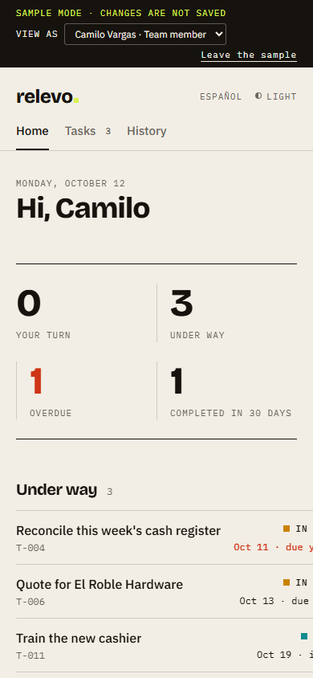
extra-celular-tablero.png · Extra · Celular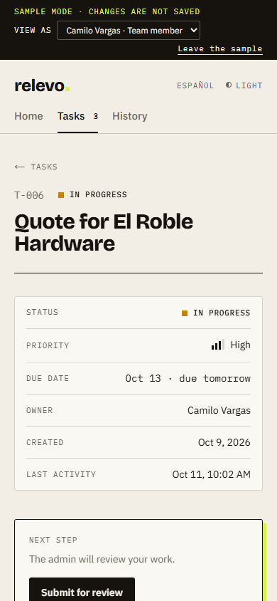
extra-celular-tarea.png · Extra · Celular, una tarea